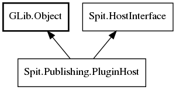

PluginHost
Object Hierarchy:

Description:
public interface PluginHost :
Object,
HostInterface
Manages and provides services for publishing plugins.
Implemented inside Shotwell, the PluginHost provides an interface through which the developers of publishing plugins can query and make
changes to the publishing environment. For example, through the PluginHost, plugins can get a list of the photos and videos to be
published, install and remove user-interface panes in the publishing dialog box, and request that the items to be uploaded be serialized
to a temporary directory on disk. Plugins can use the services of the PluginHost only when their
Publisher is in the running state. This ensures that non-running publishers
don’t destructively interfere with the actively running publisher.
Namespace: Spit.Publishing
Package: shotwell-plugin-dev
Content:
Enums:
-
ButtonMode - Specifies the label text on the push
button control that appears in the lower-right-hand corner of the on-screen publishing dialog box.
Methods:
-
public abstract void post_error (
Error err)
Notifies the user that an unrecoverable publishing error has occurred and halts the publishing process.
-
public abstract void stop_publishing ()
Halts the publishing process.
-
public abstract Publisher get_publisher ()
Returns a reference to the Publisher
object that this is currently hosting.
-
public abstract void install_dialog_pane (DialogPane pane, ButtonMode mode = CANCEL)
Attempts to install a pane in the on-screen publishing dialog box, making the pane visible and allowing
it to interact with the user.
-
public abstract void install_static_message_pane (
string message, ButtonMode mode = CANCEL)
Attempts to install a pane in the on-screen publishing dialog box that contains static text.
-
public abstract void install_pango_message_pane (
string markup, ButtonMode mode = CANCEL)
-
public abstract void install_success_pane ()
Attempts to install a pane in the on-screen publishing dialog box notifying the user that his or her
publishing operation completed successfully.
-
public abstract void install_account_fetch_wait_pane ()
Attempts to install a pane displaying the static text “Fetching account information...” in the on-
screen publishing dialog box, making it visible to the user.
-
public abstract void install_login_wait_pane ()
-
public abstract void install_welcome_pane (
string welcome_message, LoginCallback on_login_clicked)
Attempts to install a pane displaying the text 'welcome_message' above a push button labeled “Login”
in the on-screen publishing dialog box, making it visible to the user.
-
public abstract void set_service_locked (
bool is_locked)
Toggles whether the service selector combo box in the upper-right-hand corner of the on-screen
publishing dialog box is sensitive to input.
-
public abstract void set_dialog_default_widget (
Widget widget)
Makes the designated widget the default widget for the publishing dialog.
-
public abstract Publishable[] get_publishables ()
Returns an array of the publishable media items that the user has selected for upload to the remote
service.
-
public abstract ProgressCallback? serialize_publishables (
int content_major_axis, bool strip_metadata =false)
Writes all of the publishable media items that the user has selected for upload to the remote service to
a temporary directory on a local disk.
-
public abstract MediaType get_publishable_media_type ()
Returns a Publisher.MediaType
bitfield describing which kinds of media are present in the set of publishable media items that the user has selected for upload to
the remote service.